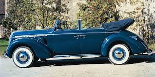

Перший Opel

Перший автомобіль, випущений під брендом "Opel", відомий як Opel Patent-Motorwagen System Lutzmann.
Цей автомобіль був представлений у 1899 році. Він був створений Фрідріхом Лютцманом, співзасновником
компанії Opel. Opel Patent-Motorwagen System Lutzmann був невеликим автомобілем з одним циліндром і
об'ємом двигуна 1,6 літра. Він мав потужність 3 кінських сили і міг розганятися до швидкості близько
20 км/год. Opel Patent-Motorwagen System Lutzmann був важливим кроком в історії компанії Opel і став
першим комерційно успішним автомобілем, випущеним під їхнім брендом. Цей автомобіль відзначався своєю
надійністю та простотою у використанні. З того часу Opel розвинула свою лінійку автомобілів і стала
відомою як один з провідних європейських виробників. Бренд відомий своїми інноваціями, високою якістю
своїх автомобілів і широким спектром моделей, що задовольняють різні потреби та смаки клієнтів.